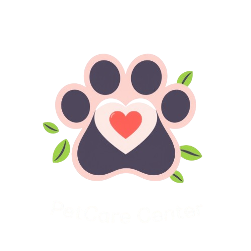

A fully responsive and user-friendly pet care site crafted with free tools and the Astra theme.

📘 Project Overview
PetCare is a clean, fully responsive WordPress website made for a fictional pet care service.
Built using the free Astra theme and plugins, it demonstrates my ability to create professional layouts using only open-source tools.